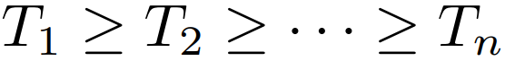
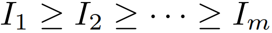
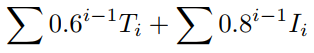

Individual Round
The individual round will consist of 25 short answer problems, to be done in 60 minutes. Problems will generally range from early AMC10 level to late AIME level. Point values for individual round problems will not be pre-determined; instead, similar to what happens at HMMT, problems will be weighted after the contest based on the number of correct submissions. The individual round score will be the sum of the point values on the problems answered correctly.
Team Round
The team round will consist of 14 short answer problems, to be done in 30 minutes, along with a minigame for teams to be able to increase (or even decrease!) their team round scores. Problems will generally range from mid AMC10 level to HMMT level. Each of the 14 problems will have weighted point values, determined before the test. The team round score will be the sum of the point values on the problems answered correctly, multiplied by the multiplier generated by a team's submission for the minigame.
Scoring
Team Score: A team's score will be the sum of their team round score and all 4 of the members' scores from the individual round.
School Score: A school's score will be calculated as follows: If the team subscores from teams whose members are all from the school are  and the individual scores from contestants from the school are , then the school score will be . Thus, while it is important to have a lot of participation from a school, it is also equally important that students and teams score well on the individual and team rounds.